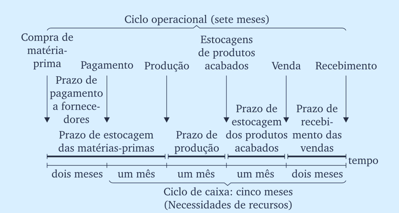
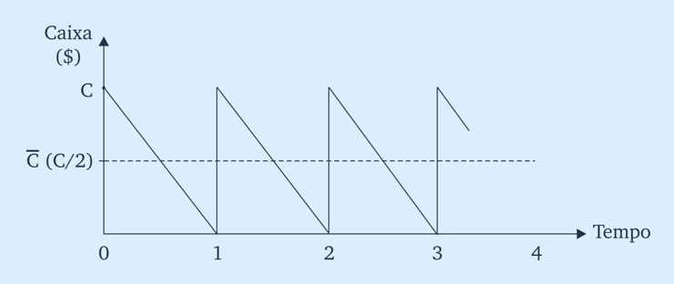
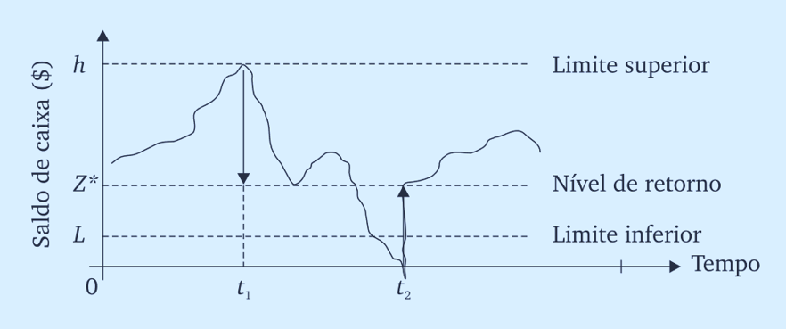

Modelos de Caixa
A administração de caixa busca determinar o nível ótimo de recursos líquidos que maximize o retorno e preserve a liquidez empresarial
Envolve decisões sobre:
A importância da gestão de caixa varia conforme:
Definição: Razões econômicas que justificam a manutenção de recursos líquidos pelas empresas, conforme teoria keynesiana
Características: Equilibrio entre os custos de manter caixa e os benefícios da liquidez disponível
Objetivo: Otimizar o nível de recursos que minimize custos totais e atenda às necessidades operacionais
Motivo Transacional:
Motivo Precaucional:
Motivo Especulativo:
Definição: Período compreendido entre o desembolso inicial para compra de matérias-primas até o efetivo recebimento das vendas realizadas
Cálculo da Rotatividade: \text{Giros Anuais} = \frac{12 \text{ meses}}{\text{Ciclo de Caixa (meses)}}
Princípio Fundamental: A maximização dos giros determina menores necessidades de recursos monetários no disponível
Componentes:
PMEMP: Prazo de estocagem de matérias-primas
PMF: Prazo de fabricação
PMEPA: Prazo de estocagem de produtos acabados
PMR: Prazo de recebimento
PMP: Prazo de pagamento a fornecedores

Medidas de Responsabilidade Exclusiva da Tesouraria:
Medidas de Política Empresarial Ampla:
Conceito: Montante que permite à empresa saldar compromissos programados e manter reserva de segurança para imprevistos
Fórmula Básica: \text{Saldo Mínimo} = \frac{\text{Desembolsos Totais Esperados}}{\text{Giro de Caixa no Período}}
Limitação: Não incorpora a variável incerteza e os riscos associados aos fluxos financeiros operacionais
Refinamentos Necessários:
Objetivo: Fornecer ao administrador financeiro condições científicas para definir o nível ótimo de recursos em caixa
Características:
Benefício: Base científica para tomada de decisões financeiras
Análise de Custos: Custo de manutenção versus custo de obtenção de recursos líquidos
Malefício da Liquidez:
Benefício da Liquidez:
Premissa: A empresa inicia com quantidade C de recursos e, sempre que essa quantia se esgota, vende títulos para reposição integral.

Custo Obtenção: \text{CO} = b \times \frac{T}{C}
Custo Manutenção: \text{CM} = i \times \frac{C}{2}
Custo Total: CT = \left( b \times \frac{T}{C} \right) + \left( i \times \frac{C}{2} \right)
Saldo Ótimo: C^* = \sqrt{\frac{2 \times b \times T}{i}}
Variáveis do Modelo: C = Saldo monetário total de caixa; T = Valor total de caixa previsto para o período; b = Custo fixo de transações com títulos negociáveis; i = Taxa de juros dos títulos negociáveis no período
Principais Restrições:
Características: Modelo probabilístico para aplicação em situações de incerteza dos fluxos de caixa
Pressuposto: Variações de caixa são aleatórias e podem ser elevadas ou diminuídas por transações desconhecidas
Mecanismo: Estabelece limites superiores e inferiores que determinam transferências automáticas entre caixa e aplicações em títulos mobiliários
Objetivo: Minimizar o custo esperado total das necessidades de caixa pela escolha dos limites ótimos h (superior) e z (retorno).

Cálculo do Nível de Retorno Ótimo:
z = \sqrt[3]{\frac{3b\sigma^2}{4i}} + L
Limite Superior: h = 3z - 2L
Onde: b = Custo fixo de transações com títulos negociáveis; \sigma^2 = Variância dos saldos líquidos diários de caixa; i = Taxa de juros diária de títulos negociáveis
Dificuldades Adicionais:
Pressão de Aumento:
Pressão de Redução:
Síntese dos Conceitos:
A administração de caixa requer equilibrio científico entre liquidez e rentabilidade
Modelos quantitativos fornecem base metodológica para decisões otimizadas
Incerteza e inflação exigem adaptações e refinamentos nos modelos clássicos
Integração estratégica: Decisões de caixa devem estar alinhadas com políticas financeiras globais da empresa
FCCP | Administração de Caixa